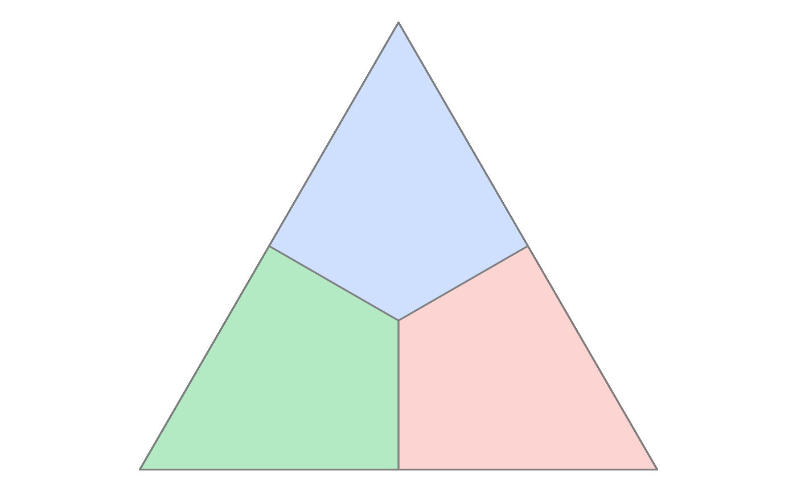

Create polygonal regions in a ternary plot based on a reference point
geom_ternary_region.Rdgeom_ternary_region() and stat_ternary_region() divide the ternary triangle
into three polygonal regions centered around a specific reference point.
Geometrically, lines are drawn from the reference point perpendicular to the three edges of the triangle. These lines partition the simplex into three zones, where each zone is associated with the closest vertex (item). This is often used to visualize "winning regions" or catchment areas for each item.
Usage
geom_ternary_region(
mapping = NULL,
position = "identity",
show.legend = NA,
inherit.aes = FALSE,
x1 = 1/3,
x2 = 1/3,
x3 = 1/3,
vertex_labels = NULL,
...
)
stat_ternary_region(
mapping = NULL,
data = NULL,
geom = "polygon",
position = "identity",
show.legend = NA,
inherit.aes = FALSE,
x1 = 1/3,
x2 = 1/3,
x3 = 1/3,
vertex_labels = NULL,
...
)
StatTernaryRegionArguments
- mapping
Set of aesthetic mappings created by
ggplot2::aes(). To map aesthetics to the computed region labels, useggplot2::after_stat(), e.g.,aes(fill = after_stat(vertex_labels)).- position
A position adjustment to use on the data for this layer. This can be used in various ways, including to prevent overplotting and improving the display. The
positionargument accepts the following:The result of calling a position function, such as
position_jitter(). This method allows for passing extra arguments to the position.A string naming the position adjustment. To give the position as a string, strip the function name of the
position_prefix. For example, to useposition_jitter(), give the position as"jitter".For more information and other ways to specify the position, see the layer position documentation.
- show.legend
Logical. Should this layer be included in the legends?
NA(default) includes it if aesthetics are mapped.FALSEnever includes it;TRUEalways includes it.- inherit.aes
If
FALSE, overrides the default aesthetics rather than combining with them.- x1, x2, x3
Numeric values defining the reference point in ternary coordinates (proportions). Must sum to 1 (or will be normalized). Default is
c(1/3, 1/3, 1/3)(the centroid), which divides the space into three equal regions.- vertex_labels
Character vector of length 3 providing names for the regions. The order must correspond to the three vertices of the ternary plot. If
NULL, regions are labeled "Region 1", "Region 2", and "Region 3", starting from the rightmost vertex and moving clockwise.- ...
Other arguments passed on to
layer()'sparamsargument. These arguments broadly fall into one of 4 categories below. Notably, further arguments to thepositionargument, or aesthetics that are required can not be passed through.... Unknown arguments that are not part of the 4 categories below are ignored.Static aesthetics that are not mapped to a scale, but are at a fixed value and apply to the layer as a whole. For example,
colour = "red"orlinewidth = 3. The geom's documentation has an Aesthetics section that lists the available options. The 'required' aesthetics cannot be passed on to theparams. Please note that while passing unmapped aesthetics as vectors is technically possible, the order and required length is not guaranteed to be parallel to the input data.When constructing a layer using a
stat_*()function, the...argument can be used to pass on parameters to thegeompart of the layer. An example of this isstat_density(geom = "area", outline.type = "both"). The geom's documentation lists which parameters it can accept.Inversely, when constructing a layer using a
geom_*()function, the...argument can be used to pass on parameters to thestatpart of the layer. An example of this isgeom_area(stat = "density", adjust = 0.5). The stat's documentation lists which parameters it can accept.The
key_glyphargument oflayer()may also be passed on through.... This can be one of the functions described as key glyphs, to change the display of the layer in the legend.
- data
The data to be displayed in this layer. There are three options:
If
NULL, the default, the data is inherited from the plot data as specified in the call toggplot().A
data.frame, or other object, will override the plot data. All objects will be fortified to produce a data frame. Seefortify()for which variables will be created.A
functionwill be called with a single argument, the plot data. The return value must be adata.frame, and will be used as the layer data. Afunctioncan be created from aformula(e.g.~ head(.x, 10)).- geom
The geometric object to use to display the data. Default is
"polygon".
Computed variables
stat_ternary_region() calculates the following variables which can be accessed
with after_stat():
x,yCartesian coordinates defining the polygon shapes.
idNumeric identifier for the specific geometric points used to build the polygons:
1-3: The main vertices of the ternary triangle.
4: The reference point (center).
5-7: The projection points on the edges.
groupInteger (1, 2, or 3) identifying which region the polygon belongs to.
vertex_labelsThe label assigned to the region (derived from the
vertex_labelsparameter).
Examples
aecdop22_transformed <- prefviz:::aecdop22_transformed
# Get ternable
tern22 <- ternable(aecdop22_transformed, ALP:Other)
# Draw the ternary plot
ggplot(get_tern_data(tern22, plot_type = "2D"), aes(x = x1, y = x2)) +
geom_ternary_cart() +
geom_ternary_region(
vertex_labels = tern22$vertex_labels,
aes(fill = after_stat(vertex_labels)),
alpha = 0.3, color = "grey50",
show.legend = FALSE
)
